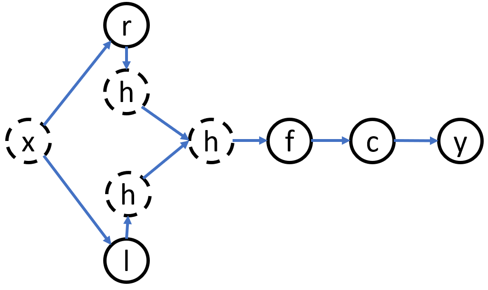

1. LSTM - CRF Model
We provide a brief description of LSTMs and CRFs, and present a hybrid tagging architecture. This architecture is similar to the ones presented by Collobert et al. (2011) and Huang et al. (2015).
1.1. LSTM
Recurrent neural networks (RNNs) are a family of neural networks that operate on sequential data. They take as input a sequence of vectors (x 1 ,x 2 ,...,x n ) and return another sequence (h 1 ,h 2 ,...,h n ) that represents some information about the sequence at every step in the input. Although RNNs can, in theory, learn long dependencies, in practice they fail to do so and tend to be biased towards their most recent inputs in the sequence (Bengio et al., 1994). Long Short-term Memory Networks (LSTMs) have been designed to combat this issue by incorporating a memory-cell and have been shown to capture long-range dependencies. They do so using several gates that control the proportion of the input to give to the memory cell, and the proportion from the previous state to forget (Hochreiter and Schmidhuber, 1997). We use the following implementation:
[success]
LSTM的过程：
- 把和合并成一个大的输入向量
- 根据输入向量和缓存状态计算gate
- gate决定输入向量和缓存状态各起多少作用，得到新的缓存状态
- 根据输入向量和新的缓存状态计算另一个gate
- gate决定有多个进入
where σ is the element-wise sigmoid function, and is the element-wise product. For a given sentence (x 1 ,x 2 ,...,x n ) containing n words, each represented as a d-dimensional vector, an LSTM computes a representation of the left context of the sentence at every word t. Naturally, generating a representation of the right context as well should add useful information. This can be achieved using a second LSTM that reads the same sequence in reverse. We will refer to the former as the forward LSTM and the latter as the backward LSTM. These are two distinct networks with different parameters. This forward and backward LSTM pair is referred to as a bidirectional LSTM (Graves and Schmidhuber, 2005).
The representation of a word using this model is obtained by concatenating its left and right context representations, . These representations effectively include a representation of a word in context, which is useful for numerous tagging applications.
[success]
输入向量序列x分别正向LSTM和反向LSTM得到向量ht1和向量ht2，
ht1和ht2合并成一向量，称为h，是关于输入序列的some information
1.2. CRF Tagging Models
[success]
CRF 条件随机场说明：
公式代表在已知X的情况下预测Y的分布。
X是输入变量，即观测序列
Y是输出变量，即标记序列
A very simple—but surprisingly effective—tagging model is to use the h t ’s as features to make independent tagging decisions for each output y t (Ling et al., 2015b). Despite this model’s success in simple problems like POS tagging, its independent classification decisions are limiting when there are strong dependencies across output labels. NER is one such task, since the “grammar” that characterizes interpretable sequences of tags imposes several hard constraints (e.g., I-PER cannot follow B-LOC; see §2.4 for details) that would be impossible to model with independence assumptions.
[success]
由于output之间有strong dependency，不能直接根据预测
[?] Pos tagging
Therefore, instead of modeling tagging decisions independently, we model them jointly using a conditional random field (Lafferty et al., 2001).
[success]
解决方法： 使用CRF做tagging决定“jointly”
For an input sentence
we consider P to be the matrix of scores output by the bidirectional LSTM network. P is of size n × k, where k is the number of distinct tags, and corresponds to the score of the j th tag of the i th word in a sentence.
[success]
P是的矩阵，
代表第i个单词打第j个tag的分数
n代表句子长度，k代表tag个数
For a sequence of predictions
we define its score to be
[success]
公式说明：
x: 输入的word组成的序列
y: 由预测的tag组成的序列
第一项：tag前后的关联性分数
第二项：独立分类的分数
P在上一段已经解释，A将在下一段解释。
整体上是表示一个句子存在的可能性。
where A is a matrix of transition scores such that A i,j represents the score of a transition from the tag i to tag j. y 0 and y n are the start and end tags of a sentence, that we add to the set of possible tags. A is therefore a square matrix of size k+2.
[success]
A：状态转移矩阵
代表tag i向tag j转移的分数
矩阵A中增加了start和end两个tag，因此size是k+2
A softmax over all possible tag sequences yields a probability for the sequence y:
[success]
代表遍历所有的可能的y
During training, we maximize the log-probability of the correct tag sequence:
[warning] [?] 把上面的公式对数化，以防下溢？
where represents all possible tag sequences (even those that do not verify the IOB format) for a sentence X.
[warning] 为什么要包含明显不可能存在的y？这种y出现的概率为0，没有必要算进去呀？
From the formulation above, it is evident that we encourage our network to produce a valid sequence of output labels.
[warning] 没看出来怎么鼓励产生合法sequence的。
While decoding, we predict the output sequence that obtains the maximum score given by:
[success]
在所有y中找到一个使s最大的y
Since we are only modeling bigram interactions between outputs, both the summation in Eq. 1 and the maximum a posteriori sequence y ∗ in Eq. 2 can be computed using dynamic programming.
[success]
bigram interaction是指只依赖于的结果，因此可以用DP
1.3. Parameterization and Training
The scores associated with each tagging decision for each token (i.e., the ’s) are defined to be the dot product between the embedding of a word-in-context computed with a bidirectional LSTM—exactly the same as the POS tagging model of Ling et al. (2015b) and these are combined with bigram compatibility scores (i.e., the ’s).
[success]
根据上面的公式可知，总分由两部分组成，单个token的得分P和前后两个token的转移分数A。
其中P的计算公式为：
h由双向LSTM得到。
This architecture is shown in figure 1. Circles represent observed variables, diamonds are deterministic functions of their parents, and double circles are random variables.
[success]

虚线圆圈代表向量，实线圆圈代表unit。
x为输入层
l为正向LSTM的一个时间步
r为反向LSTM的一个时间步
f为一个普通的隐藏层
c为crf层
y为输出层
用crf层代表softmax层生成y。
The parameters of this model are thus the matrix of bigram compatibility scores A, and the parameters that give rise to the matrix P, namely the parameters of the bidirectional LSTM, the linear feature weights, and the word embeddings.
[success]
要训练的参数：
A、双向LSTM的weights、word embedding
As in part 2.2, let xi denote the sequence of word embeddings for every word in a sentence, and yi be their associated tags. We return to a discussion of how the embeddings xi are modeled in Section 4. The sequence of word embeddings is given as input to a bidirectional LSTM, which returns a representation of the left and right context for each word as explained in 2.1.
[success]
word embedding的生成将在[4]中介绍。
LSTM的输入是word embedding.
LSTM的输出（经过一个隐藏层f）是一个token的P。
These representations are concatenated (ci ) and linearly projected onto a layer whose size is equal to the number of distinct tags. Instead of using the softmax output from this layer, we use a CRF as previously described to take into account neighboring tags, yielding the final predictions for every word yi .
[success]
CRF层代替softmax层来产生结果。
Additionally, we observed that adding a hidden layer between c i and the CRF layer marginally improved our results. All results reported with this model incorporate this extra-layer. The parameters are trained to maximize Eq. 1 of observed sequences of NER tags in an annotated corpus, given the observed words.
[info]
annotated corpus：附码语料库
1.4. Tagging Schemes
The task of named entity recognition is to assign a named entity label to every word in a sentence. A single named entity could span several tokens within a sentence. Sentences are usually represented in the IOB format (Inside, Outside, Beginning) where every token is labeled as B-label if the token is the beginning of a named entity, I-label if it is inside a named entity but not the first token within the named entity, or O otherwise.
[success] IOB format
B: token是name entity的第一个单词
I：token是name entity的一部分，但不是第一个单词
O：token不是name entity
However, we decided to use the IOBES tagging scheme, a variant of IOB commonly used for named entity recognition, which encodes information about singleton entities (S) and explicitly marks the end of named entities (E).
[success] IOBES tagging scheme
B: token是name entity的第一个单词
I：token是name entity的一部分，但不是第一个单词，也不是最后一个单词。
E：token是name entity的最后一个单词
S：token是name entity，且name entity只包含这一个token
O：token不是name entity
Using this scheme, tagging a word as I-label with high-confidence narrows down the choices for the subsequent word to I-label or E-label, however, the IOB scheme is only capable of determining that the subsequent word cannot be the interior of another label. Ratinov and Roth (2009) and Dai et al. (2015) showed that using a more expressive tagging scheme like IOBES improves model performance marginally. However, we did not observe a significant improvement over the IOB tagging scheme.
[success]
本文使用IOBES代替IOB
理论上IOBES能提升性能，实际没有发现明显地提升。